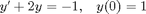
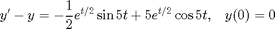
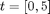
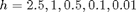
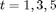
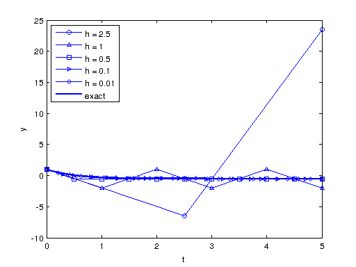
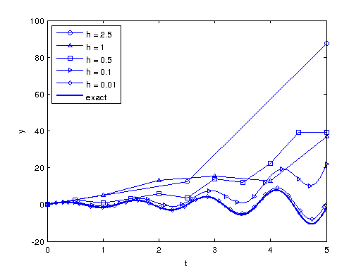

Math 340 - Lab #11 - Euler's Method
Contents
#1
Use Euler's method to approximate the solution of the following ordinary differential equations:
a)

b)

Plot your solution for

with
on the same axes with the exact solution. Comment on your results! Compute the error of the approximation at times
, and print your results in a table as followsSolution a)
clear all; clc f = @(t,y) -2.*y-1; y_exact = @(t) (3/2).*exp(-2.*t) - (1/2); h = [2.5, 1, 0.5, 0.1, 0.01 ]; Markers = ['o' '^' 's' '>' 'd']; Colors = ['k' 'r' 'b' 'm' 'c']; figure(1) hold on fprintf(' h Error t = 1 Error t = 3 Error t = 5 \n' ) fprintf(' ==========================================================\n') for i = 1: length(h) [t, y ] = euler2(f, 0, 1, h(i), 5 ); line_fewer_markers(t,y, 5*i,Markers(i),'MarkerFaceColor','none','MarkerSize',5); if i~=1 % [t(1/h(i)+1), t(3/h(i)+1),t(5/1/h(i)+1)] fprintf('%3.2f %11.8f %12.8f %12.8f \n', h(i), abs(y(1/h(i)+1)-y_exact(t(1/h(i)+1))),... abs(y(3/h(i)+1)-y_exact(t(3/h(i)+1))), abs(y(5/h(i)+1)-y_exact(t(5/h(i)+1)))) end end plot(t, (3/2).*exp(-2.*t) - (1/2),'LineWidth',2) legend('h = 2.5', 'h = 1', 'h = 0.5', 'h = 0.1', 'h = 0.01', 'exact') xlabel('t'), ylabel('y') legend('Location', 'NW') box on
h Error t = 1 Error t = 3 Error t = 5 ========================================================== 1.00 1.70300292 1.50371813 1.50006810 0.50 0.20300292 0.00371813 0.00006810 0.10 0.04194165 0.00186122 0.00004669 0.01 0.00407359 0.00021937 0.00000656

Solution b)
clear all; clc f = @(t,y) y - 0.5.*exp(t./2).*sin(5.*t) + 5.*exp(t./2).*cos(5.*t); y_exact = @(t) exp(t./2).*sin(5.*t); h = [2.5, 1, 0.5, 0.1, 0.01 ]; Markers = ['o' '^' 's' '>' 'd']; Colors = ['k' 'r' 'b' 'm' 'c']; figure(2) hold on fprintf(' h Error t = 1 Error t = 3 Error t = 5 \n' ) fprintf(' ==========================================================\n') for i = 1: length(h) [t, y ] = euler2(f, 0, 0, h(i), 5 ); line_fewer_markers(t,y, 5*i,Markers(i),'MarkerFaceColor','none','MarkerSize',5); if i~=1 fprintf('%3.2f %11.8f %12.8f %12.8f \n', h(i), abs(y(1/h(i)+1)-y_exact(t(1/h(i)+1))),... abs(y(3/h(i)+1)-y_exact(t(3/h(i)+1))), abs(y(5/h(i)+1)-y_exact(t(5/h(i)+1)))) end end plot(t, exp(t./2).*sin(5.*t),'LineWidth',2) legend('h = 2.5', 'h = 1', 'h = 0.5', 'h = 0.1', 'h = 0.01', 'exact') legend('Location', 'NW') xlabel('t'), ylabel('y') box on
h Error t = 1 Error t = 3 Error t = 5 ========================================================== 1.00 6.58099885 12.67864663 38.72707888 0.50 2.56716358 11.13482711 41.03092942 0.10 0.60932730 4.38770168 23.56702776 0.01 0.06519800 0.53049424 3.17293751
